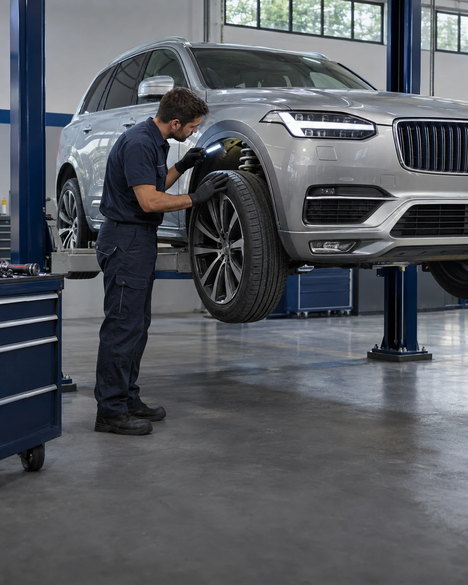
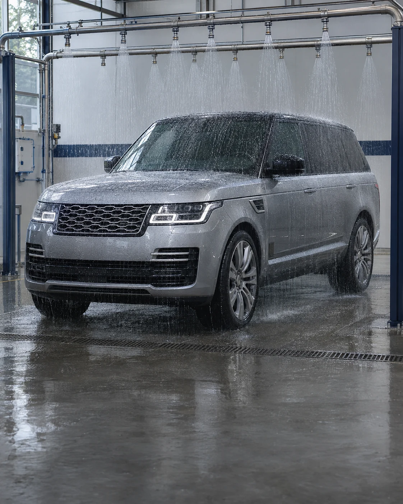
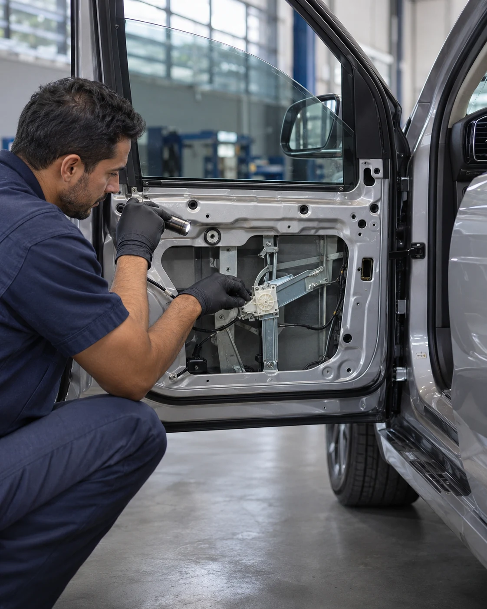
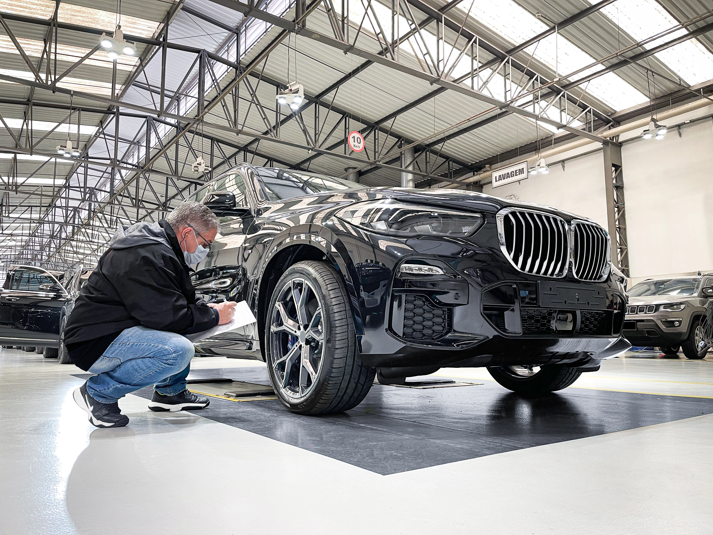

Ouvir, avaliar e ajustar.
Teste de rodagem para identificar ruídos e entender o comportamento do veículo durante a condução.

Assistência técnica e manutenção para blindados de qualquer marca e modelo, com equipe especializada e planos de revisão.
Agendar atendimentoRuídos, infiltrações ou dificuldade nos vidros merecem atenção. Nossa equipe avalia blindados de qualquer marca e modelo e orienta o cuidado certo para cada necessidade.

Teste de rodagem para identificar ruídos e entender o comportamento do veículo durante a condução.

Teste no simulador de chuva para localizar entradas de água e orientar a correção das infiltrações.

Inspeção, lubrificação e ajustes para cuidar do funcionamento dos vidros e dos componentes da blindagem.

Siga o plano entregue com o seu veículo. A manutenção periódica ajuda a conservar a blindagem e atender às condições da garantia.
O que ocorrer primeiro após a blindagem. A primeira revisão especial é gratuita, conforme as condições do plano do veículo.
O que ocorrer primeiro. As próximas revisões seguem o plano de acompanhamento do sistema de blindagem.
Consulte o plano e as condições de garantia do seu veículo. Itens de desgaste natural e serviços de manutenção não integram a cobertura.
Agendar revisãoConte o que mudou no uso do carro. Essas informações ajudam nossa equipe a orientar a avaliação.
Marca, modelo, ano, quilometragem e o que você percebeu: ruído, infiltração ou dificuldade de funcionamento. Informe quando acontece e, se disponíveis, o histórico de revisões e os documentos da blindagem.
A inspeção considera os itens previstos no atendimento, os acabamentos e o funcionamento dos componentes. O diagnóstico orienta os serviços necessários para o seu veículo.
O transporte pode ser feito em caminhões plataforma próprios. Consulte disponibilidade, trajeto e condições com a equipe antes de agendar.
Pequenos reparos e ajustes podem ser avaliados para atendimento no local. A disponibilidade depende da necessidade do veículo e da viabilidade do serviço.